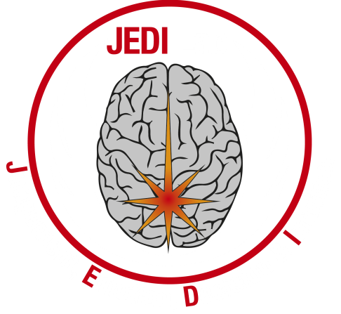

Research map
Ideas, people & connections
Explore the ideas running through JEDI Lab's research. Choose a theme or researcher to see related collaborators and publications. The map is built from the lab's public bibliography.
—publications
—named contributors
—publication years
—citations (OpenAlex)
Research connections
Drag to rearrange · Shift-drag a theme to move its group · Scroll to zoom
100%
Publication metrics
Themes are suggested from publication titles and journal names; they are an aid to browsing, not a formal coding of the research. Contributor nodes reflect cited coauthors, not verified JEDI Lab membership: the source bibliography does not identify historical lab affiliation, uses abbreviated author names and may omit authors where it uses an ellipsis. Publication data is maintained by the site administrator in the JSON dataset.